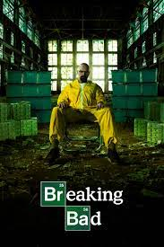

Breaking Bad

Walter White, un profesor de química, comienza a fabricar metanfetaminas después de ser diagnosticado con cáncer de pulmón, con la ayuda de su exalumno Jesse Pinkman. La serie sigue su transformación de un hombre de familia en un criminal peligroso.
Personajes principales: Walter White, Jesse Pinkman, Skyler White, Hank Schrader, Gus Fring
Stranger Things

Un drama que retrata la vida de jóvenes que viven en el mundo de la droga y las pandillas en el este de Londres. Muchachos que arriesgarán todo para llegar a ser "Top Boy".
Personajes principales: Asher D, Micheal Ward, Jasmine Jobson, Kano Sully, Shone Romulus